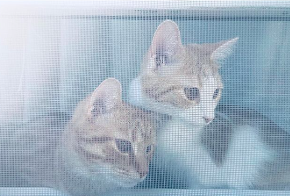

This week in Internet Art, we had exercises 1 and 2 due. The two assignments allowed me the opportunity to implement the skills I have been learning in class. For exercise 1 I told the story of my first trip to Kenya using multiple HTML files. With the second exercise, I used Cassandra (Poem Version) by the group Florence + The Machine. I utilized boxes, colors, and different sizes/fonts to capture the meaning of the poem.
The exercises allowed me the opportunity to see my classmate's work. I enjoyed seeing the different ways people interpreted the assignment and the various techniques used. As a CIS major (Computer Information Science), I am excited to improve my coding skills. I am also looking forward to seeing more of my classmate's work this semester.
My weekend plans include studying, cleaning my room, and meeting with my group to plan our group project. Outside of school, I have been watching the show Gilmore Girls, reading the second book in the Twilight series (New Moon), and crocheting hats for my cats Simba and Latifah. I have attached an image of my two cats! The cat on the left is Simba, and the one on the right is Latifah.

HOME